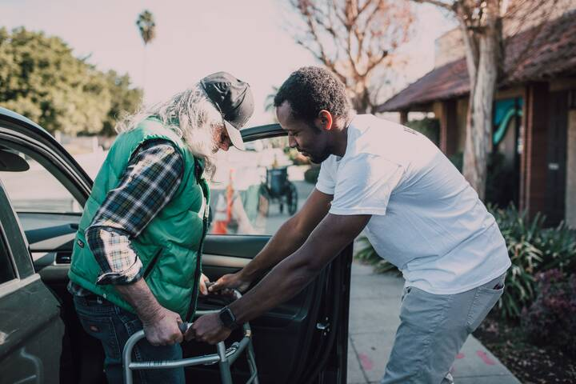

- Home
- Industries
- Hospitality & Services
Hospitality & Services
Hospitality workforce consulting for hotels, restaurants, venues and service businesses that know the guest experience is only as good as the people delivering it, and want to build teams that stay, grow and serve well.
The people side of hospitality & services.
Hospitality is defined by human interaction. Housekeepers, front desk agents, servers, cooks, bartenders and event staff create the moments guests remember. Yet many hospitality jobs involve physically demanding work, irregular hours, variable income and limited advancement. Turnover is high across the industry, and many businesses struggled to rebuild staff after the pandemic disruption. General managers and supervisors are often promoted for operational skill and given little support in leading people, managing conflict or building team culture.
Guests expect personalized, consistent service across every touchpoint, from booking and arrival to dining and checkout. When teams are short-staffed or newly hired, service quality varies and guest reviews reflect it immediately. Hospitality businesses are also deeply connected to their communities as employers of local residents, including many immigrants and young workers, and as destinations that shape neighborhood character. Tourism can strain housing and local services, making community relationships increasingly important.
Several forces are reshaping the sector. Labor costs have risen, and minimum wage changes in many jurisdictions affect tipped and non-tipped workers. Technology is changing service models through mobile check-in, digital ordering and automation in back-of-house operations. Guests increasingly value sustainability and authentic local experiences. Many hospitality businesses operate under franchise or management agreements, which complicates culture and standards. Hospitality workforce consulting must help these businesses build stable, skilled teams and service experiences that are consistent, warm and sustainable.
What leaders are up against.
High frontline turnover
Hospitality businesses face persistent turnover among housekeeping, food and beverage, and front-of-house staff. Unpredictable schedules, demanding physical work, variable pay and limited advancement all contribute. Constant hiring and training drains manager time and makes consistent service difficult. Understanding which factors drive turnover in each property and role is the first step toward stabilizing teams.
Underprepared managers and supervisors
Department heads and supervisors are often promoted from frontline roles because they excel operationally, then left to manage scheduling, conflict and team development with little training. Their leadership quality strongly influences whether staff stay and how guests are treated, making manager capability one of the most important levers in hospitality.
Inconsistent guest experience
Guest experience varies across shifts, properties and touchpoints, often due to staffing gaps, unclear standards or disconnected systems. Guest feedback reveals symptoms but rarely root causes. Improving consistency requires understanding how service is actually delivered, including the back-of-house processes and staff experiences behind every guest interaction.
Culture across properties and brands
Hotel groups, restaurant groups and franchised brands must maintain a coherent culture and service standard across properties with different owners, managers and local labor markets. Brand standards alone do not create culture. Leaders need ways to build shared values and practices while allowing local adaptation.
Career paths in a transient workforce
Many hospitality workers see their jobs as temporary, partly because career pathways are unclear. Yet hospitality can offer meaningful advancement, including for workers without degrees and for immigrant workers. Businesses that make pathways visible and support skill development can retain talent and develop future leaders from within.
Where we focus.
- →
Frontline retention analytics
We analyze turnover by property, department, shift and manager, alongside scheduling and pay data, and interview current and former staff. Leaders receive clear insights into what drives departures and a prioritized set of changes to scheduling, onboarding, pay practices and management that improve retention.
- →
Manager and supervisor development
We design practical leadership programs for general managers, department heads and supervisors that focus on coaching, scheduling fairness, conflict resolution and recognition. Programs fit operational realities, use real scenarios from the property and include follow-up coaching on the floor so new habits last beyond training.
- →
Guest experience service design
We map the guest journey alongside the front- and back-of-house processes that support it, using service blueprints to reveal where breakdowns occur. Working with staff and guests, we design improvements that make service more consistent and make the work itself easier for teams to deliver.
- →
Employee experience across the lifecycle
We help hospitality businesses design the employee experience from recruitment and onboarding to scheduling, recognition and advancement, focusing on the moments that most affect whether staff stay. Designs are tested with frontline employees before rollout across properties and refined based on what they tell us.
- →
Culture across properties
We assess culture across properties and brands through listening and data, identify shared strengths and gaps, and help leaders define core values and practices that can travel across ownership and management structures while leaving room for local character and the strengths of each team.
The social good at stake.
Hospitality and service businesses employ many people who are early in their careers, new to the country or seeking work without a degree. These jobs can be a route to stable income and real advancement, or a revolving door. Businesses that invest in fair scheduling, capable managers and visible career paths help workers build better lives and give guests experiences shaped by people who want to be there. Hospitality also shapes how communities welcome visitors, and responsible practices help ensure tourism strengthens local economies rather than straining them.
Frequently asked questions.
What does hospitality workforce consulting include?
Hospitality workforce consulting focuses on how hotels, restaurants, venues and service businesses recruit, schedule, develop, lead and retain their teams. Our work includes turnover and retention analytics, manager and supervisor development, employee experience design, culture assessment across properties, and guest experience service design. We connect workforce improvements directly to guest experience and operational performance measures.
How do you connect employee experience to guest experience?
We analyze employee measures such as turnover, tenure, scheduling stability and engagement alongside guest satisfaction and review data at the property and department level. We also map the guest journey together with the staff experience behind it. This shows leaders where staffing and management issues are affecting guests, and it helps prioritize the people investments with the greatest effect.
Do you work with franchised or managed properties?
Yes. We work with brands, ownership groups and management companies to build culture and service practices that function across different ownership structures. We help define what must be consistent and what can vary locally, design manager development that travels across properties, and establish shared people measures so leaders can compare performance and learn from strong properties.
Relevant services.
Predictive Retention Analytics
Attrition modeling with survival analysis and fairness testing that shows who is likely to leave, when, and why, so retention efforts reach the right people.
ExploreLeadership Consulting
Evidence-based leadership consulting to define what good leadership looks like for your strategy and build it across executives and managers.
ExploreService Design
End-to-end service redesign that aligns what customers experience with the people, processes and systems that deliver it behind the scenes.
ExploreEmployee Experience Design
Redesign of the moments that shape working life, from hiring and onboarding to growth and exit, using research, data and co-design with employees.
ExploreCulture Transformation
Culture transformation that names the behaviors your strategy needs and changes the systems, leadership habits and routines that shape them.
ExploreCustomer & Employee Journey Mapping
Evidence-based customer and employee journey maps that show where experiences break down, why it happens, and which improvements will matter most.
ExploreFurther reading.

Service Blueprinting
How a service blueprint connects the customer experience to the people, processes and systems behind it, and how to build one that leads to operational change.
Read
What Is Employee Experience?
A practical definition of employee experience, how it differs from engagement and culture, and how organizations can measure and design it with the same rigor as customer experience.
ReadLet’s talk about the people problem in front of you.
Every engagement begins with a conversation. Tell us what you are facing and we will tell you, candidly, how we would approach it.
Start a conversation